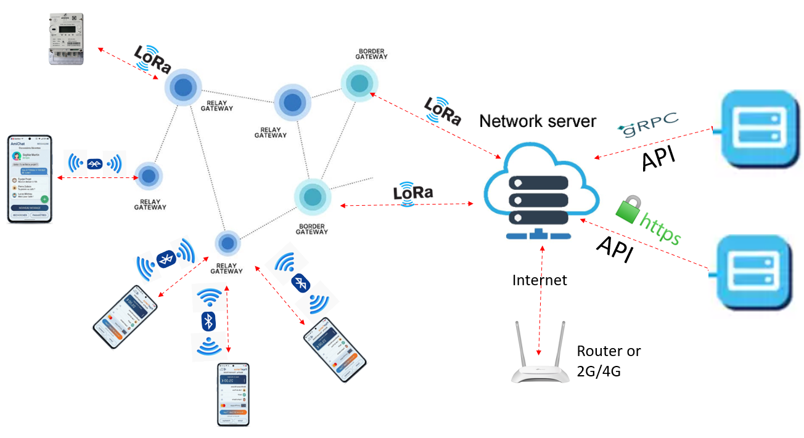
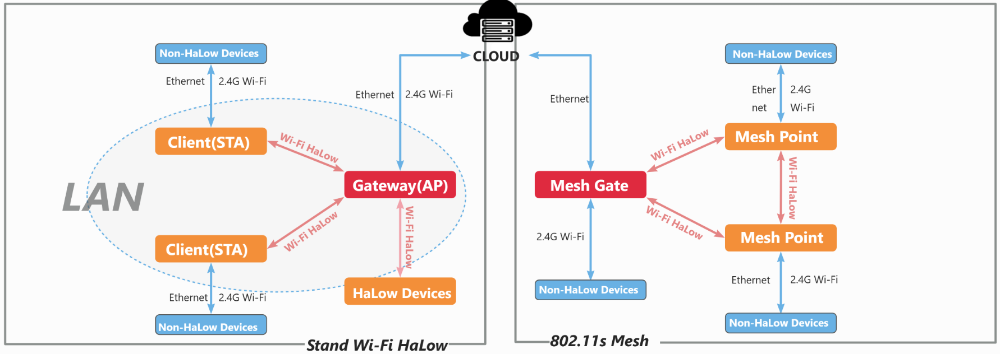
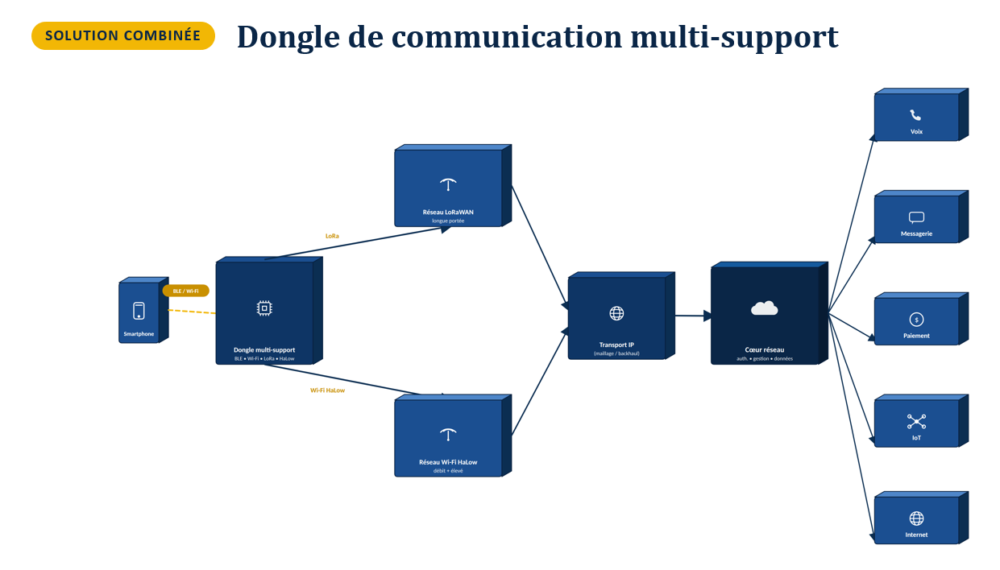

Réseau maillé de télécommunication autonome¶
Mettre en place un réseau maillé de télécommunication utilisable sans connexion Internet.
Objectif¶
Construire une infrastructure de télécommunication autonome, privée et multiservice : les échanges (IoT, télémétrie, messagerie, paiement, voix...) transitent uniquement par un réseau maillé propre au département, sans dépendre d'un opérateur télécom ni d'un accès Internet.
Cette page retrace, dans l'ordre où elles ont été étudiées, les trois architectures envisagées pour répondre à cet objectif. Chaque solution répond aux limites de la précédente : la première (LoRaWAN + BLE) donne une portée exceptionnelle mais un débit trop faible pour la voix ou la messagerie ; la seconde (Wi-Fi HaLow) apporte ce débit mais réduit la portée ; la troisième combine les deux pour obtenir un réseau complet, capable de porter à la fois l'IoT, le paiement, la messagerie, la voix et un accès Internet optionnel.
Solution 1 — Architecture LoRaWAN + BLE¶

Dans cette première architecture, chaque utilisateur porte simplement son smartphone : c'est lui qui se connecte, en Bluetooth Low Energy (BLE), au relais le plus proche — un petit boîtier dont le seul rôle est de récupérer les données émises par le téléphone (une position, un message, une demande de paiement) et de les faire suivre plus loin. Ces relais ne sont pas isolés : ils se maillent entre eux, c'est-à-dire qu'ils peuvent se transmettre les données de proche en proche jusqu'à atteindre une passerelle frontière, celle qui fait l'interface entre le maillage local et le reste de l'infrastructure. Cette passerelle utilise à son tour la technologie LoRa — la même famille de radio que celle qui relie les relais entre eux, mais ici sur le dernier segment avant le cœur du réseau — pour transmettre l'ensemble des données collectées au serveur réseau (le « Network Server »). C'est ce serveur qui centralise tout : il authentifie les messages, les trie, et les redistribue vers des serveurs externes via deux types d'interfaces de programmation (API) — l'une en gRPC, plus rapide et adaptée aux échanges internes fréquents, l'autre en HTTPS, plus universelle et adaptée à des services web classiques. Enfin, le serveur réseau dispose aussi d'une sortie Internet, via un routeur 2G/4G, qui lui permet — quand une connexion existe — de synchroniser des données avec l'extérieur ou de recevoir des mises à jour, sans pour autant que cette connexion soit nécessaire au fonctionnement quotidien du maillage local.
L'intérêt principal de cette architecture tient à deux chiffres, affichés sur le schéma : une portée qui peut atteindre 15 km entre un relais et la passerelle, et une consommation électrique extrêmement faible, qui permet à un relais alimenté par une simple batterie ou un petit panneau solaire de fonctionner pendant des mois, voire des années, sans intervention. C'est exactement le compromis que propose la technologie LoRa : elle sacrifie le débit pour offrir une portée et une autonomie énergétique inégalées.
Pourquoi cette architecture ne suffit pas seule¶
C'est justement ce compromis qui devient une limite dès que l'on sort du cadre de la simple collecte de données. Le débit affiché sur le schéma — de 0,3 à 50 kbps seulement — est suffisant pour transmettre une position GPS, une petite transaction de paiement ou un court message texte, mais totalement insuffisant pour porter une conversation vocale, une messagerie enrichie (photos, fichiers) ou une simple page web. À cela s'ajoute le fait que LoRa repose sur un mécanisme d'accès à la bande radio qui limite le temps d'émission de chaque appareil (le « duty cycle »), ce qui introduit des délais supplémentaires dès que le volume d'échanges augmente. Autrement dit, la Solution 1 est excellente pour une infrastructure de capteurs ou de paiements ponctuels à faible volume, mais elle ne peut pas, à elle seule, servir de réseau de télécommunication complet capable de faire transiter de la voix ou de l'Internet. C'est cette limite précise — un débit trop faible pour les usages riches — qui a motivé l'étude d'une seconde architecture, pensée cette fois pour le débit plutôt que pour la portée.
Solution 2 — Architecture Wi-Fi HaLow¶

Cette seconde architecture change de logique : plutôt que de faire porter tout le trajet par une radio à très faible débit comme LoRa, elle s'appuie sur le Wi-Fi HaLow, une variante du Wi-Fi conçue pour fonctionner sur de plus longues distances tout en restant beaucoup plus rapide que LoRa. Le smartphone se connecte cette fois à un dongle (un petit boîtier externe, puisque le Wi-Fi HaLow n'est pas encore intégré nativement dans les téléphones du marché), en BLE ou en Wi-Fi classique selon ce que le téléphone propose. Ce dongle rejoint ensuite un nœud HaLow, qui fait lui-même partie d'un petit maillage de nœuds voisins — un peu comme les relais de la Solution 1, mais ici en Wi-Fi HaLow plutôt qu'en LoRa. Ce maillage de nœuds achemine les données jusqu'à un cœur de réseau (« Network Core »), qui joue un rôle proche du serveur réseau de la Solution 1, à la différence près qu'il expose directement trois services utilisables : la voix (VoIP), la messagerie, et un accès Internet.
Le schéma résume bien le compromis inverse de celui de LoRa : la portée reste correcte pour un usage local (jusqu'à 1 à 2 km, contre 15 km pour LoRa), mais le débit grimpe fortement — jusqu'à environ 8 Mbps dans le cadre visé par ce projet — ce qui suffit cette fois à porter une conversation vocale ou une messagerie avec pièces jointes. C'est précisément ce qui manquait à la Solution 1.
En contrepartie, le Wi-Fi HaLow consomme davantage d'énergie que LoRa, et sa portée plus courte impose de multiplier les nœuds de maillage pour couvrir une même zone. Utilisée seule, cette architecture est donc bien adaptée à la voix et à la messagerie, mais elle perd l'avantage clé de la Solution 1 : une couverture très étendue avec un nombre minimal de relais, pour un coût énergétique quasi nul — un atout décisif pour l'IoT et la télémétrie à grande échelle. Aucune des deux architectures, prise isolément, ne répond donc à l'ensemble du besoin initial : il fallait les deux à la fois, chacune sur les usages où elle excelle.
Solution combinée — Réseau complet autonome¶

La troisième architecture ne choisit pas entre les deux précédentes : elle les fait cohabiter au sein d'un même appareil, le dongle multi-support, capable de parler à la fois BLE, Wi-Fi, LoRa et Wi-Fi HaLow. Concrètement, le smartphone continue de se connecter simplement en BLE ou en Wi-Fi à ce dongle, sans rien changer à son usage habituel. C'est le dongle qui décide ensuite, selon le type de service demandé, quel réseau radio emprunter : une donnée de télémétrie ou une petite transaction de paiement part par le réseau LoRaWAN, pour profiter de sa portée et de sa sobriété énergétique ; une communication vocale ou un message plus riche part par le réseau Wi-Fi HaLow, pour profiter de son débit. Ces deux réseaux, bien que physiquement différents, convergent ensuite vers une couche commune appelée transport IP — un maillage de type « backhaul » dont le rôle est justement d'unifier les deux mondes radio en un seul réseau logique, indépendant de la technologie utilisée en dernier kilomètre.
C'est ce transport IP unifié qui alimente le cœur de réseau, chargé de l'authentification, de la gestion des appareils et des données. C'est à ce niveau que se distribuent, enfin, les cinq grandes familles de services attendues : la voix, la messagerie, le paiement, l'IoT et, en option, l'Internet — ce dernier restant une passerelle vers l'extérieur plutôt qu'une dépendance : le réseau fonctionne de bout en bout sans lui, exactement comme le voulait l'objectif de départ. C'est cette architecture combinée qui constitue la cible du projet : un réseau maillé, privé, capable de fonctionner de façon totalement autonome, tout en restant assez riche pour couvrir aussi bien un capteur IoT isolé qu'un appel vocal entre deux utilisateurs.
Tableau de synthèse¶
| Critère | Solution 1 — LoRaWAN + BLE | Solution 2 — Wi-Fi HaLow |
|---|---|---|
| Portée | Très longue (~15 km) | Longue (~1-2 km, sous-GHz) |
| Débit | Faible (0,3 - 50 kbps) | Plus élevé (jusqu'à ~8 Mbps) |
| Consommation | Très faible | Plus élevée |
| Compatibilité smartphone | Non native (BLE requis) | Non native (dongle requis) |
| IoT / télémétrie | Excellent | Très adapté |
| Paiement électronique | Adapté (faibles volumes) | Très adapté |
| Voix / Internet | Très limité | Faisable |
| Réseau maillé IP | Nécessite des mécanismes | Naturel au niveau IP |
→ Détails techniques des technologies radio : LoRa & LoRaWAN · Bluetooth Low Energy (BLE) · Wi-Fi HaLow
Statut¶
🟡 Étude technique réalisée — choix d'architecture définitif et prototypage à venir. Voir le suivi de projet.